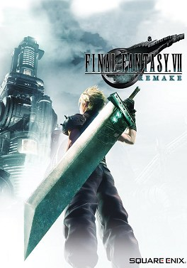

Complément
Introduction

Jaquette © SQUARE ENIX. Guide non officiel.
Objectif
Te donner tout ce qu'il faut savoir avant d'appuyer sur « Nouvelle partie » : ce qu'est ce jeu, comment fonctionnent ses systèmes, et surtout les erreurs de débutant qui coûtent cher dans un jeu où presque tout est manquable.
⚠️ Le message le plus important de ce guide : ne monte pas tes matérias avant d'avoir terminé l'histoire une première fois. Après le générique, l'expérience double et les points de compétence triplent (parties 28 et 29).
Itinéraire
- Ce qu'est Final Fantasy VII Remake.
- Les versions et les Aides de jeu.
- Comment ce guide est organisé.
- Les systèmes essentiels — combat, matérias, armes, Transcendances, invocations.
- L'économie du jeu — gils, PA, PC, Médailles Mog.
- Les 12 erreurs de débutant.
- Le plan de route du 100 %.
Déroulé pas à pas
Ce qu'est Final Fantasy VII Remake
| Notion | Détail |
|---|---|
| Ce que c'est | Le premier volet du remake de Final Fantasy VII (1997) |
| Ce qu'il couvre | Uniquement la partie Midgar de l'original — ce qui tenait en cinq ou six heures devient un jeu complet |
| Combien de chapitres | 18 |
| Combien de personnages jouables | 4 — Cloud, Barret, Tifa, Aerith (+ Yuffie et Sonon dans le DLC) |
| Le genre de combat | Action-RPG en temps réel avec une jauge ATB — ni du tour par tour, ni un pur jeu d'action |
| La suite | Final Fantasy VII Rebirth (2024), puis Final Fantasy VII Revelation, annoncé pour le 8 avril 2027 |
Et pour situer : si tu connais l'original, tu vas reconnaître chaque lieu et t'étonner de les voir habités. Si tu ne le connais pas, tu n'as besoin de rien savoir d'autre : le jeu se tient tout seul.
Les versions
| Plateforme | Date | Nom |
|---|---|---|
| PlayStation 4 | 10 avril 2020 | Final Fantasy VII Remake |
| PlayStation 5 et PC | 2021-2022 | Final Fantasy VII Remake Intergrade |
| Nintendo Switch 2, Xbox Series X|S, Xbox sur PC | 22 janvier 2026 | Intergrade |
| Notion | Détail |
|---|---|
| Ce que couvre ce guide | L'état du jeu au 22 janvier 2026, toutes plateformes confondues |
| La différence qui compte | Episode INTERmission, le DLC de Yuffie, est inclus dans Intergrade — mais pas dans la version ps4 d'origine |
| Les bonus d'édition | Trois matérias d'invocation (partie 22) |
Les Aides de jeu
La mise à jour du 22 janvier 2026 a ajouté un jeu d'aides facultatives, sur toutes les plateformes (partie 28).
| Option | Ce qu'elle fait |
|---|---|
| PV et PM toujours au maximum | Plus de gestion de ressources |
| 9 999 de dégâts infligés | Tout meurt en un coup |
| Quantité maximale de chaque objet | À quelques exceptions près |
| Matérias au niveau maximum | Toutes tes matérias maîtrisées d'office — ⚠️ c'est la seule option qui bloque un trophée, celui de la première montée de niveau d'une matéria (« Materia for Beginners ») |
| EXP ×2 et PA ×3 | Montée en niveau et en armes accélérée |
Elles s'activent et se désactivent une par une, à tout moment, dans le menu Options.
Mon conseil pour une première partie : n'y touche pas. Le système de combat est l'intérêt du jeu. Garde-les pour les trois passages du farm.
⚠️ nom français à vérifier en jeu : « Aides de jeu » est le nom officiel de cette fonction dans l'avis français de Square Enix pour Rebirth ; aucun avis français ne le confirme encore pour Remake (« Streamlined Progression » en anglais).
Comment ce guide est organisé
| Parties | Contenu |
|---|---|
| 01 à 18 | Un chapitre du jeu par partie, numérotée comme le chapitre : la partie 09 est le chapitre 9 |
| 19 à 27 | Les systèmes : combat, matérias, armes, invocations, quêtes, défis, Colisée, mini-jeux, collectibles |
| 28 et 29 | Le post-générique, le mode Difficile, le farm et les 63 trophées |
| 30 à 32 | Episode INTERmission |
| 99 | L'index, les manquables et la check-list finale |
⚠️ Les missions et histoires annexes sont écrites dans le chapitre où elles apparaissent (chapitres 3, 6, 7, 8, 9 et 14), parce qu'elles sont manquables dès que le chapitre est quitté.
Et chaque partie est autonome : tu peux lire la partie 11 sans avoir lu la partie 10.
Le combat — l'essentiel
Tout le système tient en une phrase : l'ATB est la seule ressource qui compte (partie 19).
| Notion | Ce qu'il faut comprendre |
|---|---|
| La jauge ATB | Les attaques normales ne font presque rien. Elles remplissent l'ATB |
| Ce que l'ATB paie | Les magies, les objets, les compétences d'armes — tout ce qui fait vraiment des dégâts |
| La garde (R1) | Elle remplit l'ATB. L'esquive, non |
| La conséquence | Garder vaut mieux qu'esquiver, presque toujours |
| L'état de Choc | Remplis la jauge de Lésion d'un ennemi pour le mettre en Choc → il prend beaucoup plus de dégâts |
| Comment provoquer la Lésion | Frapper la faiblesse élémentaire, ou le point faible structurel, ou interrompre une attaque |
| Le changement de personnage | Chaque personnage a sa propre jauge ATB — changer de personnage, c'est multiplier tes actions |
| L'erreur fondamentale | Rester sur Cloud tout le combat. Tu laisses dormir trois jauges ATB |
Les quatre personnages, en un mot chacun :
| Personnage | Son rôle |
|---|---|
| Cloud | Polyvalent ; la Bravoure du soldat troque la mobilité contre des dégâts énormes |
| Barret | À distance ; le seul qui touche confortablement les cibles volantes |
| Tifa | La reine du Choc — elle fait monter la Lésion plus vite que tout le monde |
| Aerith | La magie ; ses sorts tapent fort et son Secteur magique est redoutable |
Les matérias — l'essentiel
Les matérias sont toute ta progression (partie 20).
| Notion | Ce qu'il faut comprendre |
|---|---|
| Ce que c'est | Des orbes à sertir dans les armes et les armures ; elles donnent les magies, les compétences et les bonus |
| Les emplacements liés | Deux emplacements reliés par un trait font interagir les deux matérias — c'est le cœur du système |
| L'exemple à retenir | Affinité élémentaire + une matéria élémentaire : sur une arme, ça rend tes coups élémentaires ; sur une armure, ça résiste puis absorbe l'élément |
| Les PC | Les points de compétence : ils font monter les matérias en combat |
| La matéria la plus importante du jeu | Affinité élémentaire — au niveau 3, elle absorbe un élément en défense |
| La matéria la plus précieuse en Difficile | Prière — elle soigne tout le groupe sans dépenser de PM |
Et le piège le plus coûteux du jeu : certaines matérias demandent 10 000 PC pour atteindre leur niveau maximum. Après le générique, les PC sont triplés. Monte-les après, pas avant.
Les armes et les manuscrits
| Notion | Ce qu'il faut comprendre |
|---|---|
| Combien | 24 armes — 6 ou 7 par personnage (partie 21) |
| Aucune arme n'est périmée | Les armes montent avec toi. Celle du chapitre 1 peut rester la meilleure jusqu'au bout |
| Les noyaux | Chaque arme a un arbre d'aptitudes à débloquer avec des PA |
| La compétence d'arme | Chaque arme a sa compétence. Équipe-la, utilise-la jusqu'à maîtrise, et elle reste disponible même sans l'arme |
| Les manuscrits | Des objets qui donnent des PA ; il y en a 56 |
| Le calcul qui fait mal | Tout maximiser demande 356 PA. Une seule partie n'en donne que 246 |
| Où sont les 110 PA manquants | 40 manuscrits qui n'existent qu'en mode Difficile (partie 28) |
La conséquence pratique : essaie les 24 compétences d'armes au fil du jeu — c'est un trophée (partie 29) — mais ne disperse pas tes PA. Concentre-les sur deux armes par personnage.
Les Transcendances
| Notion | Détail |
|---|---|
| Ce que c'est | L'attaque ultime — l'héritière des Limites de 1997 |
| Comment ça se remplit | En prenant des dégâts, et en en infligeant |
| Combien chacun en a | 2 — celle de départ, et une seconde à gagner au Colisée de Cornéo (partie 25) |
| L'accessoire ultime | Le Götterdämmerung remplit la jauge au maximum en début de combat (partie 28) |
Mon conseil : garde ta Transcendance pour les phases finales des boss. Pas pour le menu fretin.
Les invocations
| Notion | Détail |
|---|---|
| Combien | 9 (partie 22) |
| Comment ça marche | Une jauge se remplit pendant les combats importants ; l'Esper se bat à tes côtés un moment, puis part sur une attaque finale |
| La dernière | Bahamut, au bout d'une longue chaîne de conditions (partie 24) |
L'économie du jeu
Quatre monnaies, et il faut savoir laquelle compte quand.
| Monnaie | À quoi elle sert | Où elle s'obtient |
|---|---|---|
| Les gils | Boutiques, Colisée, simulateur, Transcendances | Combats, coffres, objets revendus |
| Les PA (points d'arme) | Les aptitudes des armes | Les montées de niveau et les 56 manuscrits (partie 21) |
| Les PC (points de compétence) | Monter les matérias | Les combats |
| Les Médailles Mog | La boutique Mog | Le mini-jeu Brise-boîtes, en quantité infinie (partie 26) |
La seule qui soit vraiment limitée, c'est les PA. Les trois autres se farment.
Et sur les gils : ne thésaurise pas. Les armes de boutique et les Transcendances du Colisée valent leur prix.
Les systèmes annexes à connaître dès le départ
| Système | Pourquoi t'y intéresser tôt |
|---|---|
| Les rapports de Chadley | 20 rapports qui donnent les meilleures matérias du jeu (partie 24) ; ils commencent au chapitre 3 |
| Les missions annexes | 26 missions, toutes dans six chapitres, toutes manquables (partie 23) |
| Les disques de musique | 31 à ramasser, souvent à 50 gils dans une boutique (partie 27) |
| Le Colisée de Cornéo | Les secondes Transcendances, et le meilleur spot de farm du jeu (parties 25 et 29) |
| Le simulateur de combat Shinra | Il s'ouvre au chapitre 16, et un second accès au chapitre 17 (partie 24) |
| L'affinité des personnages | Elle décide de scènes et de récompenses, et des robes d'audition (partie 23) |
Les 12 erreurs de débutant
Voilà ce que je t'éviterais si je regardais par-dessus ton épaule.
| # | L'erreur | Pourquoi ça coûte cher |
|---|---|---|
| 1 | Monter ses matérias avant la fin de l'histoire | Après le générique, les PC sont triplés. Tu triples ton temps de jeu pour rien |
| 2 | Esquiver au lieu de garder | La garde remplit l'ATB, l'esquive non (partie 19) |
| 3 | Rester sur Cloud | Tu laisses dormir trois jauges ATB |
| 4 | Quitter un chapitre sans faire ses missions annexes | Elles sont définitivement perdues (partie 23) |
| 5 | Ne pas analyser les ennemis | La matéria Analyse révèle les faiblesses, et c'est tout le combat |
| 6 | Négliger Chadley | Il donne les meilleures matérias du jeu, gratuitement |
| 7 | Croire que les anciennes armes sont périmées | Elles montent avec toi. Choisis-les pour leurs aptitudes et leur compétence |
| 8 | Disperser ses PA sur les 24 armes | Il n'y en a pas assez. Deux armes par personnage, pas plus |
| 9 | Ignorer le Colisée de Cornéo | Les secondes Transcendances sont là, à 100 gils chacune (partie 25) |
| 10 | Rater Brise-boîtes | C'est la seule source de Médailles Mog, et il en faut au moins 31 (partie 26) |
| 11 | Oublier les disques de musique en boutique | Dix des 31 se ratent facilement (partie 27) |
| 12 | Croire que le 100 % se fait en une partie | Il demande trois passages par les chapitres 3, 8 et 9, plus les 18 chapitres en Difficile (partie 28) |
Le plan de route du 100 %
Pour que tu saches où tu vas.
| Étape | Ce qu'il faut faire | Partie |
|---|---|---|
| 1 | Les 18 chapitres en Normal, avec toutes les missions annexes au passage | 01 à 18 |
| 2 | Le Colisée de Cornéo et le simulateur accessible | 25, 24 |
| 3 | Les 20 rapports de Chadley → Bahamut | 24 |
| 4 | Trois passages par les chapitres 3, 8 et 9 → les 9 robes et les 26 quêtes | 23, 28 |
| 5 | Les 18 chapitres en Difficile → les 40 manuscrits | 28 |
| 6 | Les 6 combats du simulateur en Difficile → le Götterdämmerung | 24 |
| 7 | Le ménage : disques, mini-jeux, niveau 50 | 26, 27 |
| 8 | Episode INTERmission et ses 9 trophées | 30 à 32 |
Et le bon ordre, en une phrase : finis l'histoire, monte tes matérias avec le triple de PC, puis attaque le mode Difficile.
Quêtes et lieux
Les lieux où tu passeras le plus de temps
| Lieu | Ce qu'il contient | Chapitres |
|---|---|---|
| Le bidonville du Secteur 7 | Le Septième Ciel, le jukebox, les fléchettes, 6 missions annexes | 3, 13 |
| Le bidonville du Secteur 5 | L'église, la Maison Feuillue, 6 missions annexes | 8, 14 |
| Le Wall Market | Le Colisée de Cornéo, le Honeybee Inn, Brise-boîtes, les squats et les tractions | 9, 14 |
| La tour Shinra | Le simulateur de combat, les trois derniers boss | 16 à 18 |
Les PNJ à connaître
| Qui | Pourquoi il compte |
|---|---|
| Chadley | Les 20 rapports de combat, le simulateur, les meilleures matérias du jeu |
| Jessie, Biggs et Wedge | Avalanche ; Jessie décide d'un trophée au chapitre 4 |
| Tifa | Le Septième Ciel, et les robes d'audition du chapitre 3 |
| Aerith | Les fleurs du Secteur 5 |
| Marle | La propriétaire du quartier résidentiel |
| Johnny | Un trophée dépend de toutes ses apparitions (partie 29) |
| Don Cornéo, Madame M et Chocobo Sam | Les quêtes exclusives du Wall Market (partie 09) |
| Hart | Les Gants majestueux et le Pulsateur contre 10 000 gils (partie 16) |
Butin exhaustif
L'introduction n'a pas de butin propre. Mais voilà les dix objets qui changent le plus ta partie, et où les trouver.
| Nom exact | Type | Où / comment l'obtenir | Utilité |
|---|---|---|---|
| Matéria Analyse | Matéria | Chadley, chapitre 3 (partie 03) | Révèle les faiblesses — la matéria la plus utile du jeu |
| Matéria Affinité élémentaire | Matéria | Histoire annexe du chapitre 6 (partie 06) | Rend élémentaire en attaque, absorbe en défense |
| Matéria Prière | Matéria | Rapport de Chadley (partie 24) | Soigne tout le groupe sans PM |
| Matéria Garde renforcée | Matéria | Rapport de Chadley (partie 24) | Moins de dégâts et plus d'ATB |
| Matéria Chocobo et Mog | Matéria rouge | Défi d'une minute du chapitre 6 (partie 06) | Une invocation manquable |
| Matéria PC augmentés | Matéria | Marcheur invétéré après 5 000 pas (partie 20) | Double les PC d'une matéria |
| Matéria Gain d'XP et Gain de Gil | Matérias | Simulateur Shinra (partie 24) | Accélèrent tout le farm |
| Les 4 secondes Transcendances | Compétences | Colisée de Cornéo, 100 gils chacune (partie 25) | Dérisoirement bon marché |
| Götterdämmerung | Accessoire | « Trio contre Top Secret », mode Difficile (partie 24) | Jauge de Transcendance pleine en début de combat |
| Matéria d'invocation Bahamut | Matéria rouge | Rapport 20 de Chadley (partie 22) | La dernière invocation |
Conseils et pièges
Les cinq réflexes à prendre dès le chapitre 1
| # | Le réflexe |
|---|---|
| 1 | Analyse chaque nouvel ennemi. Dès que tu as la matéria Analyse, c'est automatique |
| 2 | Garde (R1) au lieu d'esquiver. Ça remplit l'ATB |
| 3 | Change de personnage en permanence. Quatre jauges ATB, c'est quatre fois plus d'actions |
| 4 | Fouille chaque cul-de-sac. Les coffres y sont tous |
| 5 | Parle à tout le monde avant de quitter une zone-hub. Les missions annexes sont manquables |
Comment lire ce guide
| Symbole | Ce qu'il signifie |
|---|---|
| Important, ou point de non-retour | |
| ⏳ Manquable, ou information de contexte | |
| « à vérifier en jeu » | Une information que je n'ai pas pu recouper. Elles sont toutes rassemblées dans la partie 99 |
| « nom français à vérifier en jeu » | Un nom donné par une seule source française |
| « (partie NN) » | Un renvoi vers une autre partie du guide |
Et sur les noms : tout ce que le jeu affiche est écrit ici sous son nom français officiel. Quand une information ne venait que d'une source anglophone, le nom anglais est entre parenthèses. Le jargon de joueur — build, farm, spot, moveset — reste tel que les joueurs le disent.
Le niveau de spoilers
Ce guide est écrit en spoilers légers.
| Ce que tu trouveras | Ce que tu ne trouveras pas |
|---|---|
| Les titres officiels des chapitres | Les révélations de l'histoire |
| Les noms des boss | Le détail des cinématiques |
| Les lieux et les PNJ | La fin |
| Les choix importants et leurs conséquences | Le pourquoi narratif de ces conséquences |
Une exception assumée : la partie 18 doit expliquer la mécanique du dernier combat, et la partie 32 nomme les deux boss secrets. Tu es prévenu.
Alertes
- ⚠️ Ne monte pas tes matérias avant la fin de l'histoire. Après le générique, l'expérience est doublée et les PC sont triplés (parties 28 et 29).
- ⚠️ Le 100 % demande trois passages complets par les chapitres 3, 8 et 9, plus les 18 chapitres en mode Difficile.
- ⚠️ Toutes les missions annexes sont manquables dès que le chapitre est quitté (partie 23).
- ⚠️ Tout maximiser demande 356 PA ; une seule partie n'en donne que 246. Les 110 manquants sont dans les 40 manuscrits du mode Difficile (partie 21).
- ⚠️ La garde (R1) remplit l'ATB, l'esquive non (partie 19).
- ⚠️ Episode INTERmission n'est pas inclus dans la version ps4 d'origine.
- ⏳ Toutes les informations marquées « ⚠️ à vérifier en jeu » sont rassemblées dans la partie 99.
Check-list
Avant de commencer
- Difficulté choisie (Normal recommandé pour une première partie)
- Aides de jeu laissées désactivées pour la première partie
- Le plan de route du 100 % lu
Les réflexes à prendre
- Analyser chaque nouvel ennemi
- Garder (R1) plutôt qu'esquiver
- Changer de personnage en permanence
- Fouiller chaque cul-de-sac
- Parler à tout le monde avant de quitter une zone-hub
- Voir Chadley à chaque chapitre où il apparaît
Ce qu'il ne faut surtout pas rater tôt
- Matéria Chocobo et Mog (chapitre 6, défi d'une minute)
- Matéria Affinité élémentaire (histoire annexe du chapitre 6)
- Les 6 cartes d'accès du chapitre 7
- Les 6 missions annexes du chapitre 3
- Les 6 missions annexes du chapitre 8
- Les 4 secondes Transcendances du Colisée (100 gils chacune)